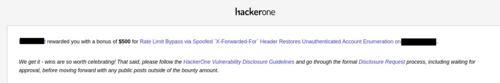

Some context first
A while back I reported a bug on a private program (details redacted — I'll call the target
[REDACTED FINANCE PLATFORM]) where an unauthenticated guest-payment flow let you brute-force
receivableAccountNumber + lastFourSsn pairs. That pair wasn't just cosmetic data — it doubled as identity
verification for other guest actions, including account cancellation. That report got accepted,
rated High/Critical, and paid out.
The rate limiter protecting that endpoint was broken in a specific way: it keyed its counter off client-controlled values — a custom header and some request-body fields. To sustain the bypass, I had to rotate those fields on a fixed cadence (every 5 requests) to dodge a secondary 401 lockout that would otherwise kick in. It worked, but it took coordination — basically a pitchfork-style attack with multiple moving parts.
The team fixed it. Retested, confirmed closed. Good result.
Then I went back
Whenever a program fixes something, I've started making it a habit to re-test the area, not just the exact bug. Fixes are patches, and patches have edges. So a few weeks later I went back to the same guest-payment identity-lookup endpoint to see what the fix actually looked like from the outside.
First thing I checked: was the 401 lockout still there? No — gone entirely. That's often a sign the whole auth/rate-limit layer got touched, which is exactly the kind of place worth poking at after a fix.
What I tried (including the stuff that failed)
This is the part I think is actually useful to other beginners, because most writeups skip straight to "and then it worked." Here's roughly what I ran through before landing on the actual bypass:
- Baseline check — hammered the endpoint with no extra headers to confirm the rate limit still triggered normally. It did: a clean
{"Error": "Too Many Request"}after a handful of requests. Good, so something was still enforcing a limit. - Rotating the old custom header (the one from the original bug) — no effect. Confirmed the old bypass vector was actually dead, not just cosmetically patched.
- Rotating request-body fields alone (account number / SSN suffix) without touching headers — still rate-limited. So the limiter wasn't purely tied to the payload anymore either.
- Cookie/session churn — clearing cookies and hitting the endpoint fresh — still limited within the same short window. Ruled out session-based keying as the weak point.
- User-Agent rotation — a classic "maybe it's dumb fingerprinting" test — no effect.
- IP-header testing — this is where it clicked. I added an
X-Forwarded-Forheader with an arbitrary value. That header isn't present anywhere in the normal flow — no proxy or CDN sets it for this app, and the client never sends it unless you add it yourself. The very next request went through clean, no throttling. - Repeated it with a new IP value on every single request. No rotation cadence needed, no secondary lockout to dodge, no other field had to move. One header, changed every time, sustained unlimited request volume indefinitely.
So the whole "what did I fail at first" list matters here — it's the difference between a lucky guess and actually understanding the fix's boundary. The old fix closed one door (application-layer field binding) and the new bug was a completely different door (trust boundary on a client-suppliable IP header) that happened to lead to the same room.
The actual bug
Root cause: the rate limiter trusted the client-supplied X-Forwarded-For header as the
request's origin IP, with no validation against a real trusted-proxy chain. Since the header is
entirely attacker-controlled and not stripped/overwritten by any intermediary before reaching
the app, sending a different value on every request reset the limiter's counter — it treated
each request as coming from a "new" client.
POST /guestpay/v1/[REDACTED-ENDPOINT] HTTP/2
Host: [REDACTED]
Content-Type: application/json
X-Forwarded-For: 127.0.0.1
{"receivableAccountNumber":XXXXXXX,"lastFourSsn":XXXX}Weakness class: CWE-290 — Authentication Bypass by Spoofing / improper trust of client-supplied headers for origin identification. This is a different bucket than the original report's issue (broken counter/identity binding), even though the symptom — unlimited unauthenticated enumeration — was identical.
Impact: full restoration of unauthenticated brute-force capability against account number + SSN-suffix pairs, with no upper bound. Since both fields are short and numeric, the valid combination space is realistically automatable, and this version was actually easier to automate than the original bug — one header, no cadence, no secondary lockout to route around.
What happened in triage
I wrote the report making the distinction very explicit up front — same symptom, different root cause, not a reopen of the old one — because I've learned that if you don't draw that line yourself, a triager might do it for you and lump it in as a duplicate.
It got triaged fine, and the team actually paid a $500 bonus on top of the original report. But the final resolution was Informative, with the reasoning being that global rate limiting can hurt legitimate customers, so they'd rather accept the enumeration risk than fix it, and that the exposed data is kept isolated from anything more sensitive in authenticated flows.

I pushed back once, politely, in a comment — pointing out that the exact same downstream impact (the pair doubling as identity verification for cancel-verification) was the reasoning that got the original report rated High. I wasn't trying to argue the money or the classification, just trying to understand the severity model for next time. That's currently sitting with HackerOne mediation for a second opinion, and I'll leave it there rather than speculate on the outcome here.
Takeaways for anyone earlier in this than me
- "Fixed" doesn't mean "safe" — it means "one path is closed." Always go back and test the feature, not just the exact payload that worked before. A fix that removes a secondary lockout mechanism is practically an invitation to check what else changed.
- Same symptom ≠ same bug. Learn to separate "what breaks" from "why it breaks." Two bugs can produce an identical impact through unrelated root causes — treat them as separate findings, and say so explicitly in your report so triage doesn't dismiss it as a dupe.
- Test the boring headers.
X-Forwarded-For,X-Real-IP,X-Client-IP,True-Client-IP— anything that sounds like infrastructure but is actually attacker-suppliable is worth throwing at any rate limiter, login form, or geo-restriction you meet. It costs nothing to try and it keeps paying off. - Document your failed attempts, not just the win. In your own notes if not in the report itself — knowing what didn't move the needle (session, cookies, User-Agent, the old header) is what actually proves you understood the mechanism instead of stumbling into it.
- A business-risk close isn't a technical rejection. "We accept this risk because fixing it could hurt real customers" is a legitimate business call, even when the technical finding is completely valid. It stings less once you separate "was I right" from "did they choose to fix it."
- Ask "why" when a severity call surprises you — calmly, once. I didn't argue for money, I asked to understand the model, referencing the program's own prior reasoning. That's a fair, professional way to learn how a program actually thinks about risk, and it costs you nothing to ask it once and then let it go.
- Root-cause hunting after every fix is a habit worth building early. This is the second time I've found something in the same functional area on this program. Patched surfaces are some of the highest-signal places to keep looking, because you already know they matter to the team.
Suggested fix (for the write-up completeness)
Don't trust X-Forwarded-For or similar client-suppliable headers as the basis for rate limiting
unless there's a proxy/CDN in front that strips and overwrites them before the origin ever sees
them — and the app reads only the value set by that trusted layer. Rate-limit and lockout
state should key off something the client genuinely can't influence: the real TCP/TLS source IP
as seen at the trusted edge, combined with session or device-binding signals that are
cryptographically tied to the session rather than freely settable.
Target name, domain, and report links redacted per program disclosure rules. Numbers in the PoC are placeholders, not real account data.